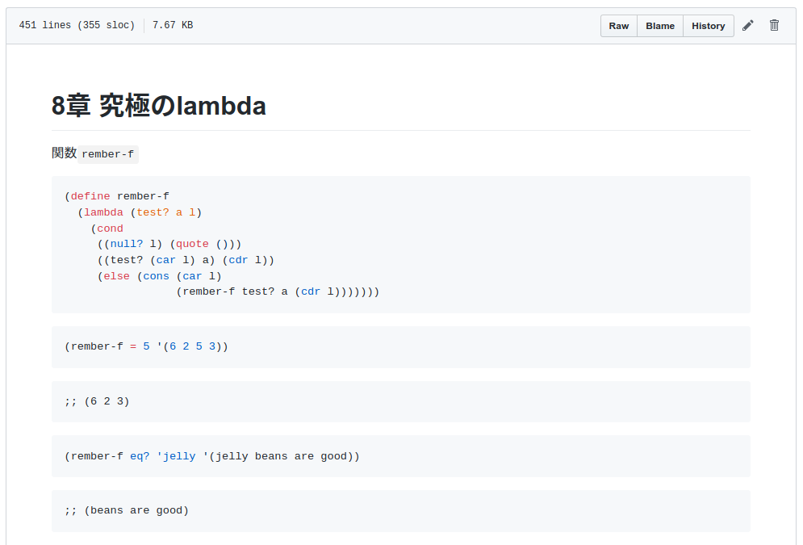

Schemeをknitする
- Webアプリケーションエンジニア
- Rで変なものを作るのが趣味
私が今まで読んだ中で最高のRの本
この本の中でHadleyが勧めている本

SICP
プログラミング言語LISPの方言Schemeが用いられ、抽象化、再帰、インタプリタ、メタ言語的抽象といった計算機科学の概念の真髄が説明されている。
RユーザーはSchemeを学ぶ必要があるのでは
でもいきなりSICPはハードル高い
もっと親しみやすい本

「この本を読んで人生が変わった」という感想を何回か聞いたことがあります。なぜなら、物事を再帰で考えられるようになるからです。
Schemeを始めて人生を変えよう。
再帰がわかると
再帰的な構造を自然に扱えるようになる。
Rで変なものを作るために再帰が必要
本題

R MarkdownでScheme手習いを写経したい
R Markdownはいろんな言語に対応している
> names(knitr::knit_engines$get())
[1] "awk" "bash" "coffee" "gawk"
[5] "groovy" "haskell" "lein" "mysql"
[9] "node" "octave" "perl" "psql"
[13] "Rscript" "ruby" "sas" "scala"
[17] "sed" "sh" "stata" "zsh"
[21] "highlight" "Rcpp" "tikz" "dot"
[25] "c" "fortran" "fortran95" "asy"
[29] "cat" "asis" "stan" "block"
[33] "block2" "js" "css" "sql"
[37] "go" "python" "julia" "sass"
[41] "scss" でもSchemeには対応してない
> knitr::knit_engines$get("scm")
NULLなので実装した
knitscm
インストール
# install.packages("remotes")
remotes::install_github("igjit/knitscm")Scheme処理系のインストール
(現在knitscmはGaucheをサポートしている)
Mac
brew install gaucheUbuntu
sudo apt install gaucheあそびかた
こんなR Markdownを書くと
```{r setup, include=FALSE}
library(knitscm)
handle <- run_gauche()
knitr::opts_chunk$set(handle = handle)
```
```{scm}
(+ 40 2)
```実行結果がrenderされる
(+ 40 2);; 42ところで
r, python, julia以外のknit engineでは
code chunkはそれぞれ別のセッションで実行される。
つまり
```{bash}
name=foo # この変数が
```
```{bash}
echo $name # ここで参照できない
```knitscmではSchemeのプロセスをchunk間で共有することで
handle <- run_gauche()
knitr::opts_chunk$set(handle = handle)chunkをまたいで実行できる
```{scm}
(define (add2 x)
(+ x 2))
```
```{scm}
(add2 40)
```実装の結果
Scheme手習いを写経してGFMで共有できるように

まとめ
Schemeのknit engineを実装した。
みんなもR MarkdownでSchemeを書こう。
そして一緒に変なもの作ろう。